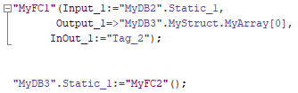
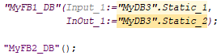
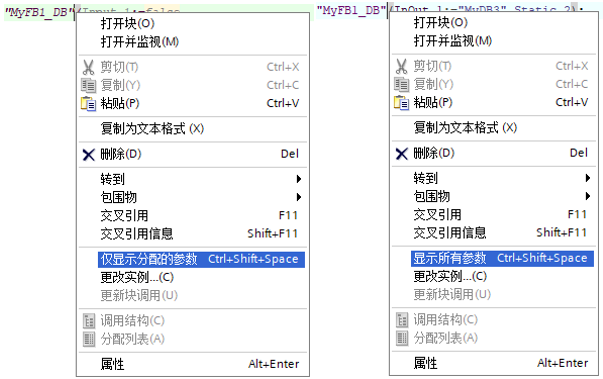
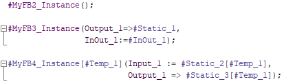
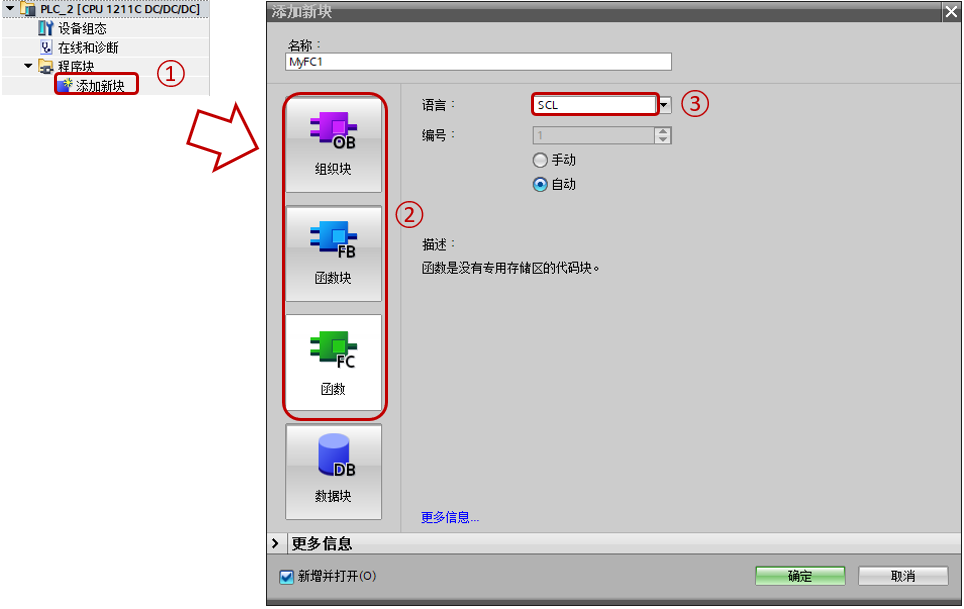
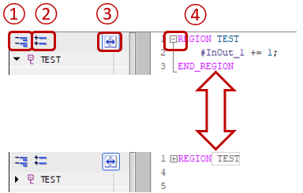
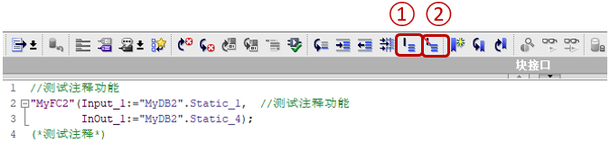

SCL介绍¶
SCL 编程语言¶
SCL（Structured Control Language，结构化控制语言）是一种基于 PASCAL 的高级编程语言。 这种语言基于标准 DIN EN 61131-3（国际标准为 IEC 1131-3）。
根据该标准，可对用于可编程逻辑控制器的编程语言进行标准化。 SCL 编程语言实现了该标准中定义的 ST 语言 (结构化文本) 的 PLCopen 初级水平。
S7-1200从V2.2版本开始支持SCL语言。
语言元素
SCL 除了包含 PLC 的典型元素（例如，输入、输出、定时器或存储器位）外，还包含高级编程语言。
表达式
赋值运算
运算符
程序控制语句
SCL 提供了简便的指令进行程序控制。例如，创建程序分支、循环或跳转。
应用
因此，SCL 尤其适用于下列应用领域：
数据管理
过程优化
配方管理
数学计算 / 统计任务
表达式¶
说明：表达式将在程序运行期间进行运算，然后返回一个值。一个表达式由操作数（如常数、变量或函数调用）和与之搭配的操作符（如 *、/、+ 或 -）组成。通过运算符可以将表达式连接在一起或相互嵌套。
运算顺序
表达式将按照下面因素定义的特定顺序进行运算：
相关运算符的优先级，优先级数越小越优先
同等优先级运算符的运算顺序按照从左到右的顺序
赋值运算的计算按照从右到左的顺序进行
括号优先级最高
表达式类型
不同的运算符，分别可使用以下不同类型的表达式：
算术表达式
关系表达式
逻辑表达式
算数表达式¶
说明：算术表达式既可以是一个数字值，也可以是由带有算术运算符的两个值或表达式组合而成。
算术运算符可以处理当前 CPU 所支持的各种数据类型。如果在该运算中有 2 个操作数，那么可根据以下条件来确定结果的数据类型：
如果这 2 个操作数均为有符号的整数，但长度不同，那么结果将采用长度较长的那个整数数据类型（例如，Int + DInt = DInt）。
如果这 2 个操作数均为无符号整数，但长度不同，那么结果将采用长度较长的那个整数数据类型（例如，USInt + UDInt = UDInt）。
如果一个操作数为有符号整数，另一个为无符号整数，那么结果将采用另一个长度较大的有符号数据类型（其包含此无符号整数）（例如，SInt + USInt = Int）
如果一个操作数为整数，另一个为浮点数，那么结果将采用浮点数的数据类型（例如，Int + Real = Real）。
如果 2 个操作数均为浮点数，但长度不同，结果将采用长度较长的那个浮点数的数据类型（例如，Real + LReal = LReal）。
对于操作数为"Time"和"日期和时间"数据类型组，运算结果的数据类型请参见表1。
算术表达式的数据类型
表1列出了在算术表达式中可使用的数据类型：
运算 |
运算符 |
优先级 |
第一个操作数 |
第二个操作数 |
结果 |
|---|---|---|---|---|---|
乘方 |
** |
2 |
整数/浮点数 |
整数/浮点数 |
浮点数 |
正号 |
+ |
3 |
整数/浮点数 |
- |
整数/浮点数 |
Time |
Time |
||||
负号 |
- |
整数/浮点数 |
- |
整数/浮点数 |
|
Time |
Time |
||||
乘法 |
* |
4 |
整数/浮点数 |
整数/浮点数 |
整数/浮点数 |
Time |
整数 |
Time |
|||
除法 |
/ |
整数/浮点数 |
整数/浮点数（≠0） |
整数/浮点数 |
|
Time |
整数 |
Time |
|||
取模 |
MOD |
整数 |
整数 |
整数 |
|
加法 |
+ |
5 |
整数/浮点数 |
整数/浮点数 |
整数/浮点数 |
Time |
Time |
Time |
|||
Time |
DInt |
Time |
|||
TOD |
Time |
TOD |
|||
TOD |
DInt |
TOD |
|||
Date |
TOD |
DTL |
|||
DTL |
Time |
DTL |
|||
减法 |
- |
整数/浮点数 |
整数/浮点数 |
整数/浮点数 |
|
Time |
Time |
Time |
|||
Time |
DInt |
Time |
|||
TOD |
Time |
TOD |
|||
TOD |
DInt |
TOD |
|||
TOD |
TOD |
Time |
|||
Date |
Date |
Time |
|||
DTL |
Time |
DTL |
|||
DTL |
DTL |
Time |
示例
以下为一些算术表达式的示例：
"MyTag1":= "MyTag2" * "MyTag3";
关系表达式¶
说明：关系表达式将两个操作数的值或数据类型进行比较，然后得到一个布尔值。如果比较结果为真，则结果为 TRUE，否则为 FALSE。
关系运算符可以处理当前 CPU 所支持的各种数据类型。结果的数据类型始终为 Bool。
编写关系表达式时，请注意以下规则：
以下数据类型组中的所有变量都可以进行比较：
整数/浮点数
位、位序列
字符串
对于以下数据类型，只能比较相同类型的变量：
TIME
日期和时间
UDT
Array
Struct
Variant
String 比较是对以 Windows 字符集编码的字符进行比较；而 WSting比较则是对 UTF-16 编码的字符进行比较。在比较过程中，将比较变量的长度及各字符对应的数值。
Array 比较需要数组维度、数组元素数据类型与数量完全相同
UDT、Array、Struct、Variant等进行的比较只能使用S7-1200 V4.2及其以上的版本。
关系表达式的数据类型
表2列出了在关系表达式中可使用的数据类型/数据类型组：
运算 |
运算符 |
优先级 |
第一个操作数 |
第二个操作数 |
结果 |
|---|---|---|---|---|---|
小于、小于等于、大于、大于等于 |
<、<=、>、>= |
6 |
整数/浮点数 |
整数/浮点数 |
Bool |
位序列 |
位序列 |
Bool |
|||
字符串 |
字符串 |
Bool |
|||
Time |
Time |
Bool |
|||
日期和时间 |
日期和时间 |
Bool |
|||
等于、不等于 |
=、<> |
7 |
整数/浮点数 |
整数/浮点数 |
Bool |
位序列 |
位序列 |
Bool |
|||
字符串 |
字符串 |
Bool |
|||
Time |
Time |
Bool |
|||
日期和时间 |
日期和时间 |
Bool |
|||
Variant |
任意数据类型 |
Bool |
|||
UDT |
UDT |
Bool |
|||
Array |
Array |
Bool |
|||
Struct |
Struct |
Bool |
示例
以下举例说明了一个关系表达式：
IF a > b THEN c:= a;
IF A > 20 AND B < 20 THEN C:= TRUE;
IF A<>(B AND C) THEN C:= FALSE;
逻辑表达式¶
说明：逻辑表达式由两个操作数和逻辑运算符（AND、OR 或 XOR）或取反操作数 (NOT) 组成。
逻辑运算符可以处理当前 CPU 所支持的各种数据类型。如果两个操作数都是 Bool 数据类型，则逻辑表达式的结果也为 Bool数据类型。如果两个操作数中至少有一个是位序列，则结果也为位序列而且结果是由最高操作数的类型决定。例如，当逻辑表达式的两个操作数分别是 Byte 类型和 Word 类型时，结果为 Word类型。
逻辑表达式中一个操作数为 Bool类型而另一个为位序列时，必须先将 Bool类型的操作数显式转换为位序列类型。
逻辑表达式的数据类型
下表列出了逻辑表达式中可使用的数据类型：
运算 |
运算符 |
优先级 |
第一个操作数 |
第二个操作数 |
结果 |
|---|---|---|---|---|---|
取反 |
NOT |
3 |
Bool |
- |
Bool |
求反码 |
位序列 |
- |
位序列 |
||
与 |
AND、& |
8 |
Bool |
Bool |
Bool |
位序列 |
位序列 |
位序列 |
|||
异或 |
XOR |
9 |
Bool |
Bool |
Bool |
位序列 |
位序列 |
位序列 |
|||
或 |
OR |
10 |
Bool |
Bool |
Bool |
位序列 |
位序列 |
位序列 |
示例
以下为一个逻辑表达式的示例：
IF "MyTag1" AND NOT "MyTag2" THEN c := a;
MyTag := A OR B;
赋值运算¶
定义：通过赋值运算，可以将一个表达式的值分配给一个变量。赋值表达式的左侧为变量，右侧为表达式的值。
函数名称也可以作为表达式。赋值运算将调用该函数，并返回其函数值，赋给左侧的变量。
赋值运算的数据类型取决于左边变量的数据类型。右边表达式的数据类型必须与该数据类型一致。
赋值运算的计算按照从右到左的顺序进行。
可通过以下方式编程赋值运算：
**单赋值运算：**执行单赋值运算时，仅将一个表达式或变量分配给单个变量：
//示例：
a := b;
**多赋值运算：**执行多赋值运算时，一个指令中可执行多个赋值运算。
//示例：
a := b := c;
此时，将执行以下操作：
b := c;
a := b;
**组合赋值运算：**执行组合赋值运算时，可在赋值运算中组合使用操作符"+“、”-“、”*“和”/"：
//示例：
a += b;
此时，将执行以下操作：
a := a + b;
也可多次组合赋值运算：
a += b += c *= d;
此时，将按以下顺序执行赋值运算：
c := c * d;
b := b + c;
a := a + b;
示例
下表举例说明了单赋值运算的操作：
“MyTag1” := “MyTag2”; |
(* 变量赋值 *) |
“MyTag1” := “MyTag2” * “MyTag3”; |
(* 表达式赋值 *) |
“MyTag” := “MyFC”(); |
(* 调用一个函数，并将函数值赋给 “MyTag” 变量 *) |
#MyStruct.MyStructElement := “MyTag”; |
(* 将一个变量赋值给一个结构元素 *) |
#MyArray[2] := “MyTag”; |
(* 将一个变量赋值给一个 ARRAY 元素 *) |
“MyTag” := #MyArray[1,4]; |
(* 将一个 ARRAY 元素赋值给一个变量 *) |
#MyString[2] := #MyOtherString[5]; |
(* 将一个 STRING 元素赋给另一个 STRING 元素 *) |
下表举例说明了多赋值运算的操作：
“MyTag1” := “MyTag2” := “MyTag3”; |
(* 变量赋值 *) |
“MyTag1” := “MyTag2” := “MyTag3” * “MyTag4”; |
(* 表达式赋值 *) |
“MyTag1” := “MyTag2” := "MyTag3 := “MyFC”(); |
(* 调用一个函数，并将函数值赋值给变量 “MyTag1”、“MyTag1” 和 “MyTag1” *) |
#MyStruct.MyStructElement1 := #MyStruct.MyStructElement2 := “MyTag”; |
(* 将一个变量赋值给两个结构元素 *) |
#MyArray[2] := #MyArray[32] := “MyTag”; |
(* 将一个变量赋值给两个数组元素 *) |
“MyTag1” := “MyTag2” := #MyArray[1,4]; |
(* 将一个数组元素赋值给两个变量 *) |
#MyString[2] := #MyString[3]:= #MyOtherString[5]; |
(* 将一个 STRING 元素赋值给两个 STRING 元素 *) |
下表举例说明了组合赋值运算的操作：
“MyTag1” += “MyTag2”; |
(* “MyTag1” 和 “MyTag2” 相加，并将相加的结果赋值给 “MyTag1”。*) |
“MyTag1” -= “MyTag2” += “MyTag3”; |
(* “MyTag2” 和 “MyTag3” 相加。将相加的结果赋值给操作数"MyTag2"，再从 “MyTag1” 中减去"MyTag2"，计算结果将赋值给 “MyTag1”。*) |
#MyArray[2] += #MyArray[32] += “MyTag”; |
(* 数组元素 “MyArray[32]” 加上 “MyTag”。计算结果将赋值给 “MyArray[32]”。之后这个数组元素 “MyArray[32]” 与数组中另一个元素"MyArray[2]"相加，然后将结果分配给数组元素 “MyArray[2]”。在该运算中，相应的数据类型必需兼容。*) |
#MyStruct.MyStructElement1 /= #MyStruct.MyStructElement2 *= “MyTag”; |
(* 结构化元素 “MyStructElement2” 乘以 “MyTag”。计算结果将赋值给 “MyStructElement2”。之后，将结构化元素 “MyStructElement1” 除以 “MyStructElement2”，并将计算结果赋值给 “MyStructElement1”。在该运算中，相应的数据类型必需兼容。*) |
寻址与调用¶
寻址¶
SCL寻址分为符号寻址与地址寻址。
符号寻址
DB块变量：“DB块名称”（.“变量名称”）
PLC变量：变量名称
局部变量：#变量名称
地址寻址
DB块变量：%DB块号（.变量地址），TIA PORTAL软件会判断该地址有没有对应符号名称，如果有则立即转换为符号名称，没有则保留绝对地址
PLC变量：%变量地址，TIA PORTAL软件会判断该地址有没有对应符号名称，如果有则立即转换为符号名称，没有则新建符号名称
Temp变量：SCL不支持非优化FC/FB的Temp变量的地址寻址
举例：
符号名 |
说明 |
||
|---|---|---|---|
符号寻址 |
DB块变量 |
“MyDB”.Variable.Static1 |
|
“MyDB”.Array[0] |
访问数组元素 |
||
“MyDB” |
DB块名作为参数 |
||
PLC变量 |
“Start” |
||
局部变量 |
#Input1 |
||
#Temp1.x0 |
变量名片段访问 |
||
地址寻址 |
DB块变量 |
%DB2.DBB1 |
|
%DB2 |
DB块名作为参数，会立刻转换为DB块名 |
||
PLC变量 |
%M100.0 |
会立刻转换为"符号名" |
|
%Q1.0:P |
会立刻转换为"符号名":P |
调用¶
程序调用分为以下几类：
FC调用
FB调用
FB多重背景调用
调用可以从指令列表或者项目树程序块中拖拽入程序编辑区域，也可以直接输入。
FC调用
FC调用的格式是
“FC块名称”(输入形参:=实参,输出形参=>实参,输入输出形参:=实参…)
返回值:=“FC块名称”(输入形参:=实参,输出形参=>实参,输入输出形参:=实参…)
FC调用需要确保所有形参都有对应实参。如果没有参数的FC也需要有括号。
如图所示的例子；

图1 FC调用
FB调用
FB调用的格式是
“背景数据块名称”(输入形参:=实参,输出形参=>实参,输入输出形参:=实参…)
一般情况下，FB的简单数据类型形参可以没有对应实参，复杂数据类型的输入、输出也可以没有对应实参，所以FB可以隐藏或不隐藏不出现的形参。如果没有参数的FB也需要有括号。
如图2所示，显示了一些FB调用的例子。

图2 FB调用
如图3所示，当FB的参数全部显示，在背景数据块右键可以激活"仅显示分配的参数"；当FB的参数只显示了分配的参数时，在背景数据块右键可以激活"显示所有参数"。

图3 显示分配/所有参数
FB多重背景调用
FB多重背景调用的格式是
#多重背景(输入形参:=实参,输出形参=>实参,输入输出形参:=实参…)
#多重背景[索引](输入形参:=实参,输出形参=>实参,输入输出形参:=实参…)
一般情况下，FB的简单数据类型形参可以没有对应实参，复杂数据类型的输入、输出也可以没有对应实参，所以FB可以隐藏或不隐藏不出现的形参。如果只有Static的FB也需要有括号。
如图4所示，显示了一些FB多重背景调用的例子。

图4 FB多重背景调用
注意：
对于定时器和计数器的SCL调用，有特殊的格式，请参考链接：定时器、计数器。
新建SCL¶
有两种方式新建SCL：
第一种是在新建块，选择OB/FC/FB后，设置语言为SCL，如图5所示。
第二种是在LAD、FBD中直接插入SCL语言段，这需要TIA PORTAL V14及其以上的版本，如图6所示。

图5 新建SCL块
①在项目树中，找到PLC，然后展开程序块，点击"添加新块"
②在弹出对话框中，选择块类型，可以是OB/FB/FC，
③选择语言为SCL

图6 在LAD中插入SCL段
区域与注释¶
和LAD/FBD不同，LAD/FBD在程序编辑器是一段一段的，编辑器可以插入新的网络段，每一个网络段可以有各自的注释。而SCL是文本语言，不分网络段（LAD/FBD语言内增加SCL除外），需要用其他的方法来解决。
区间¶
从TIA PORTAL V14以后，增加区间功能，使用指令：
REGION 区间名称
程序文本
ENDREGION
可以在指令中间增加需要编写的程序还不影响程序逻辑，并且支持嵌套。此外还可以像网络段一样收折叠来，如图7所示。

图7 区域
其中左边为区间总览，可以看出整体的结构
①使得程序或总览全部展开
②使得程序或总览全部折叠
③全部展开/折叠是针对总览与程序还是只针对总览，图中为针对总览与程序
④独立展开/折叠程序
注释¶
编辑器的空行，或者调用块的右侧均可以增加注释，如图8所示有两种方式注释：
第一种是： //注释内容
第二种是：(/注释内容/)
可以在工具栏中利用按钮整段注释或取消注释。此外从TIA PORTAL V16开始支持多语言注释，使用指令(多语言注释内容)，具体参考多语言文档。

图8 注释
①注释掉选中段落
②对注释掉的段落取消注释